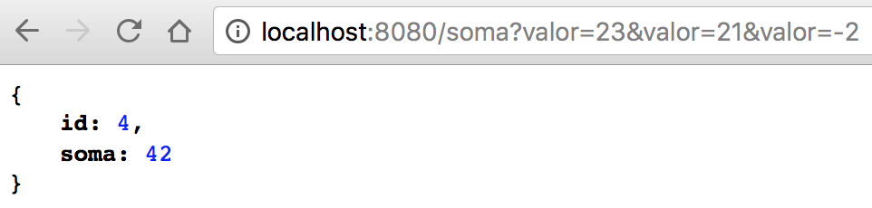

Implementando um serviço Web RESTful em Kotlin com Spring Boot
Publicado em:
@davidrobert
Este post nos guia pelo processo de criar um REST controller simples com o Spring Boot.
O Kotlin funciona muito bem em conjunto com Spring Boot. Existem algumas pequenas diferenças, no entanto, quando se trata de definir a configuração do Gradle e a estrutura do layout do projeto, bem como o código de inicialização.
Neste tutorial, vamos percorrer as etapas necessárias. Para obter uma explicação mais detalhada sobre os serviços Spring Boot e RESTful, consulte Construindo um Serviço Web RESTful.
Definindo o projeto e as dependências
Neste post vamos usar o Gradle, mas o mesmo projeto pode ser feito usando a estrutura do projeto IntelliJ IDEA ou o Maven. Para obter detalhes sobre como configurar o Gradle para trabalhar com o Kotlin, consulte a página Usando Gradle.
O arquivo Gradle é praticamente o padrão utilizado no Spring Boot. As únicas diferenças são o layout da estrutura para as pastas de origem do Kotlin, as dependências necessárias do Kotlin e o plugin Gradle do kotlin-spring.
buildscript {
ext {
kotlinVersion = '1.2.41'
springBootVersion = '2.0.2.RELEASE'
}
repositories {
mavenCentral()
}
dependencies {
classpath("org.springframework.boot:spring-boot-gradle-plugin:${springBootVersion}")
classpath("org.jetbrains.kotlin:kotlin-gradle-plugin:${kotlinVersion}")
classpath("org.jetbrains.kotlin:kotlin-allopen:${kotlinVersion}")
}
}
apply plugin: 'kotlin'
apply plugin: 'kotlin-spring'
apply plugin: 'org.springframework.boot'
apply plugin: 'io.spring.dependency-management'
group = 'br.com.while42'
version = '0.0.1-SNAPSHOT'
sourceCompatibility = 1.8
repositories {
mavenCentral()
}
dependencies {
compile('org.springframework.boot:spring-boot-starter')
compile("org.jetbrains.kotlin:kotlin-stdlib-jdk8")
compile("org.jetbrains.kotlin:kotlin-reflect")
compile('org.springframework.boot:spring-boot-starter-web')
testCompile('org.springframework.boot:spring-boot-starter-test')
}
Criando uma Classe e o Controller
O próximo passo é criar a classe Soma que tenha duas propriedades: id e um valor.
package br.com.elo7.example
class Soma(val id: Long, values: List<Int>) {
val soma: Int = values.sum();
}
Nós agora definimos o SomaController que atende os requests /soma?valor=10 e retorna um objeto JSON representando uma instância de Soma.
package br.com.elo7.example
import org.springframework.web.bind.annotation.GetMapping
import org.springframework.web.bind.annotation.RequestParam
import org.springframework.web.bind.annotation.RestController
import java.util.concurrent.atomic.AtomicLong
@RestController
class SomaController {
val counter = AtomicLong()
@GetMapping("/soma")
fun soma(@RequestParam(value = "valor", defaultValue = "0") values: List<Int>) =
Soma(counter.incrementAndGet(), values)
}
Criando a classe Application
Finalmente, precisamos definir uma classe Application. Como o Spring Boot procura por um método main static público, precisamos definir isso no Kotlin. Isso poderia ser feito com a anotação @JvmStatic, mas aqui preferimos usar uma top-level function definida fora da classe Application, pois ela leva a um código mais conciso e limpo.
Tanto o cabeçalho (parâmetros, no construtor, etc) como o corpo da classe são opcionais; se a classe não tiver corpo, as chaves podem ser omitidas. Classes and Inheritance
package br.com.elo7.example
import org.springframework.boot.autoconfigure.SpringBootApplication
import org.springframework.boot.runApplication
@SpringBootApplication
class Application
fun main(args: Array<String>) {
runApplication<Application>(*args)
}
Rodando a Aplicação
Agora podemos usar qualquer uma das tasks padrão do Gradle para o Spring Boot para executar a aplicação.
./gradlew bootRun
A aplicação é compilada e inicializada, nos permitindo acessar através do navegador (a porta padrão é 8080)

Este post foi baseado em um tutorial oficial do Kotlin